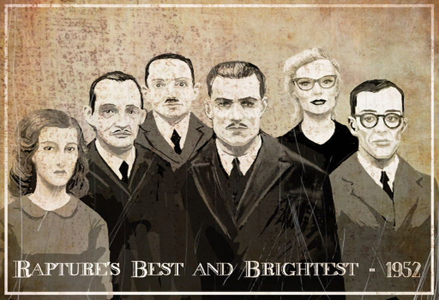
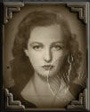
La doctora Brigid Tenenbaum es una científica que ayudó en la investigación y producción del ADAM tras descubirlo en una babosa marina.
Tenenbaum creció cerca de la ciudad de Minsk en la URSS (en el territorio de la actual Bielorrusia). Su padre era alemán, y ella se crió en la fe judía.
Cuando tenía dieciséis años, se convirtió en prisionera en el campo de concentración nazi de Auschwitz, donde observó a médicos alemanes, incluyendo a Josef Mengele, que experimentaban con prisioneros. De vez en cuando, cuando los alemanes cometían errores científicos, ella los corrigía y descubría que tenía vocación por la ciencia. Finalmente, los alemanes la pusieron a trabajar para ayudar en sus infames experimentos médicos. Tenenbaum consideró que los experimentos alemanes eran inútiles. Mientras que el resto de su familia fue asesinada, ella sobrevivió al campo de concentración debido a su ayuda a los médicos, lo que le valió el apodo de "Das Wunderkind". "La niña maravilla"
Tenenbaum fue diagnosticada con autismo de alto funcionamiento, pero no dejó que eso la definiera y más tarde se ganó una reputación como un genio científico. En 1946, desapareció misteriosamente. Las especulaciones decían que la habían llevado a Estados Unidos o la Unión Soviética, como muchos científicos después de la Segunda Guerra Mundial, o posiblemente que había sido víctima de represalias por su colaboración con los nazis. Sin embargo, su verdadero destino era Rapture.
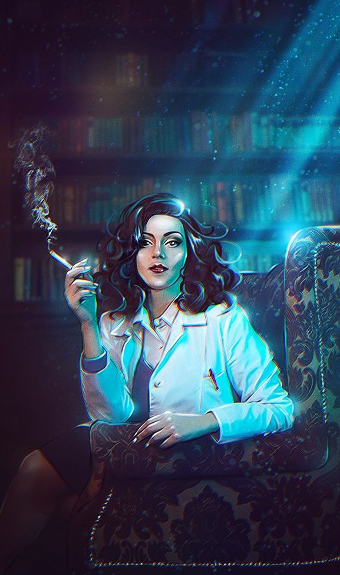
Después de su llegada a Rapture, mientras caminaba por los muelles de Port Neptune, descubrió a un contrabandista cuyas manos lisiadas habían recuperado su funcionalidad normal después de haber sido mordidas por una babosa marina . Ella investigó la babosa y encontró una sustancia que podía curar las células dañadas, incluso resucitarlas, y en investigaciones posteriores exploró los usos de esa sustancia. Se denominó ADAM y permitió a las personas manipular su ADN, abriendo la posibilidad de otorgarles superpoderes mediante el uso de plásmidos y habilidades ampliadas con Tónicos Genéticos.
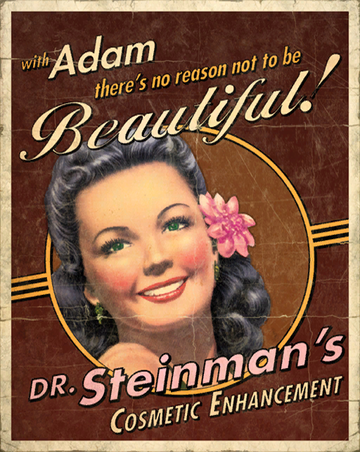
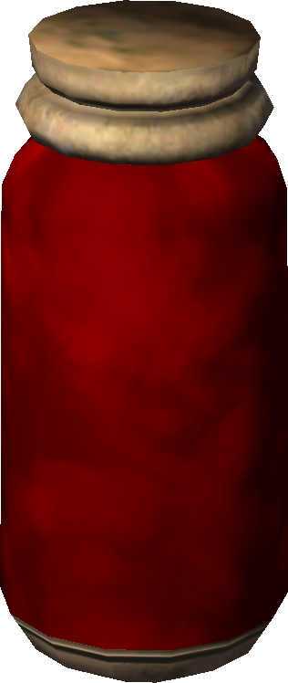
Tenenbaum desarrolló su descubrimiento y rápidamente se convirtió en una figura importante en la comunidad científica de Rapture, la mujer más conocida en Rapture, y aseguró el éxito financiero para si misma.
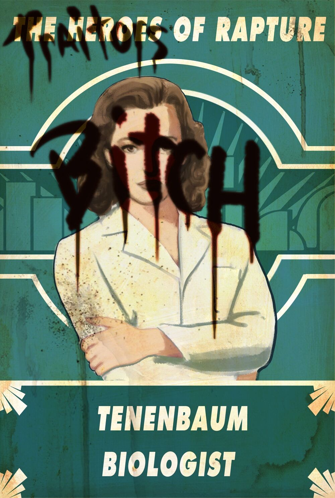
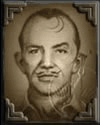
Sander Cohen es un poeta, compositor, escultor y dramaturgo. Originalmente un artista de renombre que practicaba en la ciudad de Nueva York, Cohen se convirtió en una figura destacada en la comunidad artística de Rapture.
Sander Cohen era un artista judío estadounidense que vivía en Nueva York. En la superficie, Cohen era un artista célebre, aunque a menudo tenía que inclinarse para complacer al público en lugar de seguir sus pasiones. Se sugiere que las limitaciones que el público impuso a su trabajo pueden haber sido un factor que contribuyó a su conversión a los ideales ryanistas. Durante su estadía en Nueva York, Cohen fue un buen amigo de Andrew Ryan, quien admiró su habilidad artística y lo invitó personalmente a venir a Rapture.
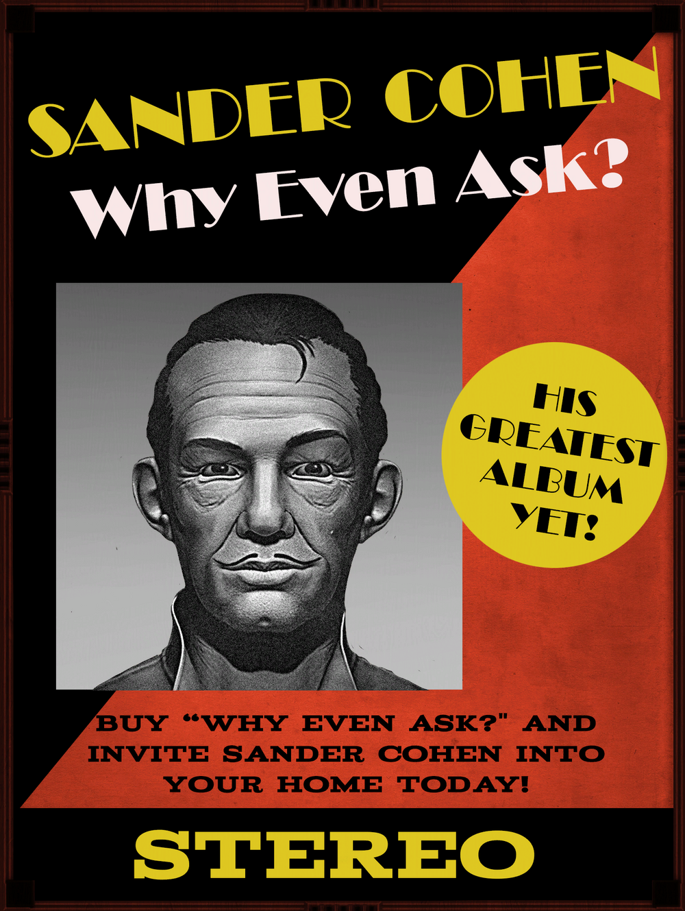
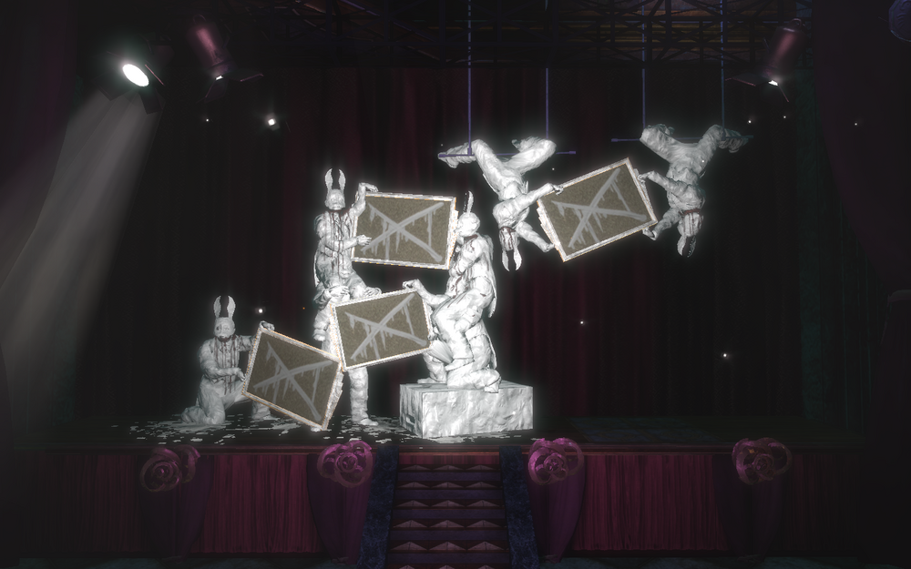
Cohen es una figura destacada en la comunidad artística y la escena social de la ciudad. Dirige Fort Frolic y es dueño de un club nocturno y varias galerías de arte en toda la ciudad. También produjo varios álbumes discográficos, el último de los cuales fue el muy publicitado Why Even Ask?, así como espectáculos teatrales, uno de los cuales se llamó Patrick y Moira. Como uno de los más fervientes seguidores de Andrew Ryan, Cohen recibió el honor de escribir el himno de Rapture, "Rise, Rapture, Rise". Cohen también estaba interesado en el movimiento artístico del expresionismo abstracto y participó en la celebración del "arte inconsciente" de Sofia Lamb en el parque Dionysus.
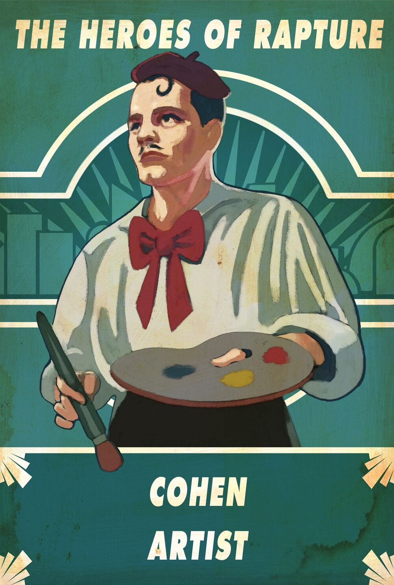
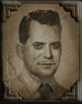
Augustus Sinclair es una de las figuras clave en la comunidad científica de Rapture, así como un destacado hombre de negocios. Su negocio, Sinclair Solutions, es una de las empresas de investigación de plásmidos más importantes de Rapture.
Augustus Sinclair nació en Panamá algunos años antes de 1914. Su abuelo trabajaba en el Canal de Panamá, y creía que estaba haciendo un servicio por el bien común. El ahogamiento de su abuelo como resultado de este esfuerzo inculcó en Sinclair la idea de que los únicos esfuerzos que valían la pena, eran los egoístas.
Sinclair finalmente se mudó a Georgia en los Estados Unidos con la esperanza de hacerse rico con sus propios esfuerzos comerciales. Con encanto sureño y habilidad para los negocios, Sinclair se hizo un nombre y atrajo la atención del industrial Andrew Ryan. Cuando Ryan creó Rapture, Sinclair aceptó la invitación con el deseo de obtener sus propios beneficios.
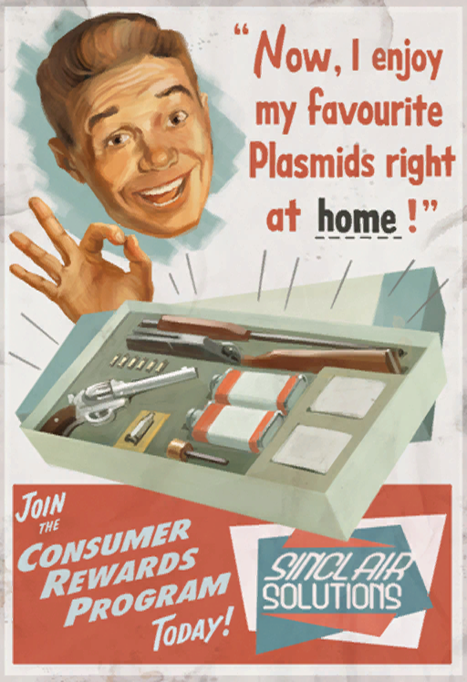
En Rapture, Sinclair llegó a ser uno de los hombres más importantes de la sociedad, debido a su creación de varias empresas exitosas. En los primeros días de la construcción de Rapture, cuando la plataforma "la Plomada" original fue amarrada en el fondo del océano, los hombres que trabajan en la fundación descubrieron una enorme caverna en la roca madre. Sinclair vio las posibilidades de tal descubrimiento y compró los derechos sobre el espacio. A través de una exploración más profunda, Sinclair descubrió que el sistema de cuevas se extendía hacia fuera en un acantilado al borde de una fosa oceánica.
Fue aquí donde Sinclair basó su negocio más exitoso, Sinclair Solutions, en el Centro Penitenciario Perséfone y el Centro de Recuperación Perséfone.
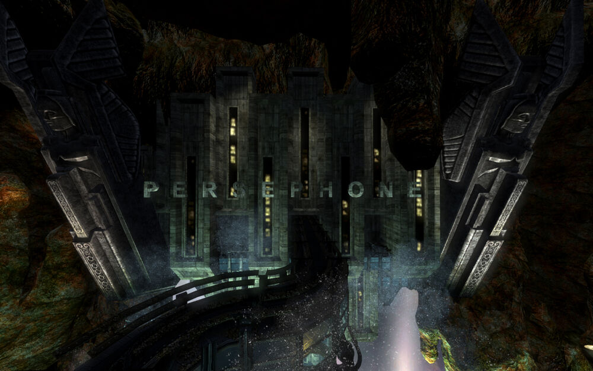
A través de los años, las empresas de Sinclair se ampliaron en una amplia variedad de mercados. Él era especialmente diestro en sacar provecho de los habitantes pobres de la ciudad. "Juguetes Sinclair" produce juguetes con mano de obra barata en los barrios pobres, junto con otros materiales más peligrosos tales como jeringas de plásmidos y ADAM. Sinclair también es propietario del 'Sinclair Deluxe', un "asequible" hotel en los barrios pobres, literalmente bajo las pistas del Expreso Atlántico. Este hotel estaba pensado para proporcionarle dinero fácil, ya que los habitantes de los barrios bajos vivían en chabolas y pagarían todo lo que tuvieran por un par de noches bajo buen techo.
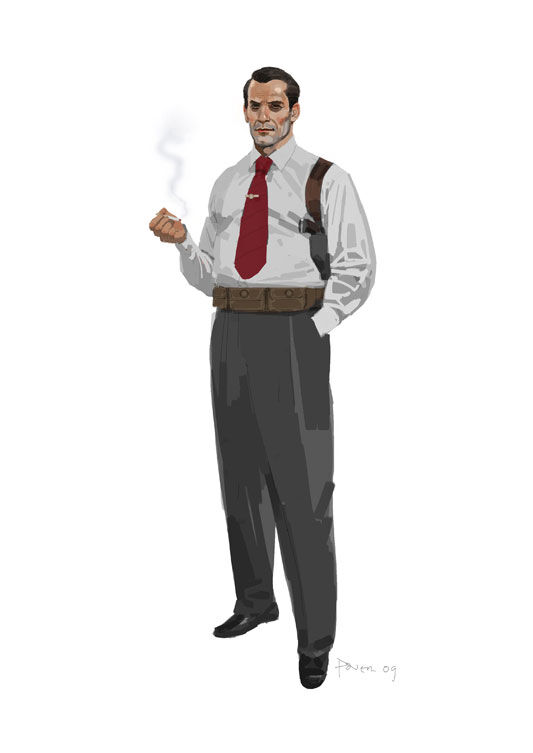
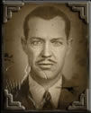
Es el fundador de Rapture, propietario de Ryan Industries, presidente del Ayuntamiento de Rapture, propietario y operador de Hefesto y uno de los hombres más importantes de la ciudad.
Andrew Ryan nació en Rusia, en un pueblo a las afueras de Minsk, en el momento en que el zar aún mantenía un régimen autocrático en el país. Su nombre era Andrei Rianofski. En 1917 fue testigo de la revolución rusa que estableció la Unión Soviética y puso a los bolcheviques comunistas en el poder. Las experiencias de Ryan bajo el régimen soviético le llevaron a su filosofía personal: el mundo moderno fue creado por grandes hombres que se esforzaron por hacer su propio camino. En un momento dado, los "parásitos" obtuvieron el control de ese mundo, lo destruyeron. En 1919, Ryan huyó de las dificultades económicas en Rusia y llegó a los Estados Unidos de América, creyendo que era un lugar donde un gran hombre podría prosperar.
Durante un tiempo, Ryan se dedicó a su país de adopción, agradecido por la riqueza y la fama que le otorgó su intelecto y determinación. Sin embargo, los programas de estado socialista adoptados durante la década de los 30 pusieron a prueba su devoción. Sus experiencias en el llamado "paraíso de los trabajadores" hicieron que Ryan despreciara las ideas del socialismo, creyendo que aquellos que se beneficiaban del trabajo de otros eran "parásitos". En su mente, uno podía poseer tan sólo aquello que había ganado.
Por ejemplo, una vez poseyó un gran bosque como retiro personal, uno que grandes grupos envidiaban. (Uno de esos grupos incluso le dijo que el bosque pertenecía a Dios, y le pidieron que creara un parque público allí.) Así que cuando el gobierno decidió nacionalizar el parque, Ryan quemó el terreno para que nadie pudiera poseerlo.
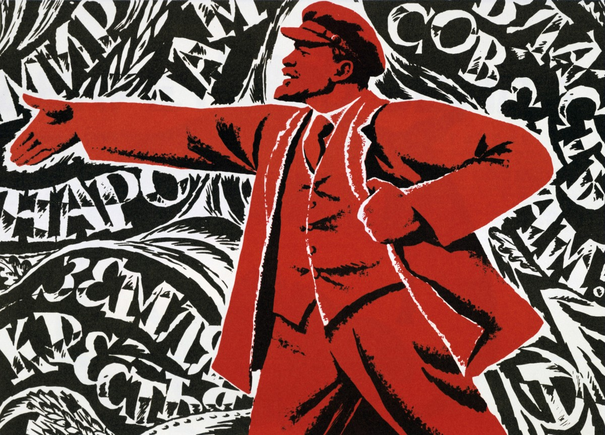
Odiando el sistema socialista, la gota que colmó el vaso fue la destrucción de Hiroshima con la bomba atómica. A ojos de Andrew Ryan, la bomba representaba la corrupción final de sus ideales, ciencia y determinación aprovechada para la destrucción, creando un arma que le daba a los parásitos la habilidad de destruir cualquier cosa que no pudieran poseer.
Ryan, temiendo el fin del mundo tal y como lo conocía, y con el temor de que los llamados "parásitos" tomaran definitivamente el control, decidió crear un lugar donde poder desarrollar sus ideales libremente, un paraíso libre de parásitos, con libre mercado y libre albedrío. Encargó a su jefe de seguridad investigar acerca de posibles lugares para la creación de la nueva ciudad.
La respuesta de Ryan fue usar toda su fortuna para construir Rapture; una comunidad donde "el artista no temería al censor, donde el científico no estaría atado por la moralidad mezquina, donde lo grande no estaría constreñido por lo pequeño", en el único lugar que sintió que los "parásitos" no podían tocar: el profundidades del Océano Atlántico. Ryan eligió personalmente la ubicación de Rapture desde su barco, "El Olímpico".
Rapture comenzó a ser habitada en 1948, y fue terminada completamente en 1951. En cuanto Rapture estuvo completada, Ryan comenzó a llenarla con miles de las mentes más brillantes del mundo, empresarios, científicos, artistas, etc. La ciudad se convirtió rápidamente en aquello que Ryan soñaba, un paraíso de libertad y prosperidad. Desde 1946 hasta 1958, Rapture experimentó un tremendo progreso económico y una sólida estabilidad política.
Como Ryan predijo, los ciudadanos de Rapture crearon una cultura de espíritu empresarial sin igual, con abundantes negocios y un avance científico sin precedentes, pues los negocios no se veían frenados por los impuestos, ni la ciencia por la moral.
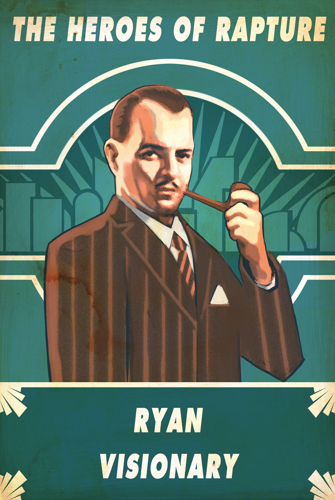
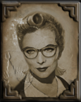
La Dra. Sofia Lamb MD, Ph.D, es psiquiatra clínica.
Desde muy pequeña, Sofia Lamb fue criada por su padre. Era médico y creía firmemente en el ideal utilitario del bien mayor, al que se refería como "el imperativo de la clasificación". Sofia Lamb adoptó su filosofía y luego siguió sus pasos, especializándose en psiquiatría en la Universidad de Oxford.
Mientras vivía en Hiroshima, Japón, durante la Segunda Guerra Mundial, trabajó como misionera brindando ayuda médica a los sobrevivientes del bombardeo de Hiroshima. Lamb sobrevivió a los bombardeos, pero se enteró de que los viejos y queridos amigos que hizo en Hiroshima habían muerto. Lamb se horrorizó cuando descubrió que Estados Unidos estaba usando su propio ideal altruista del "bien común" para justificar el bombardeo, y esto la convenció de que el mundo estaba condenado a destruirse a sí mismo.
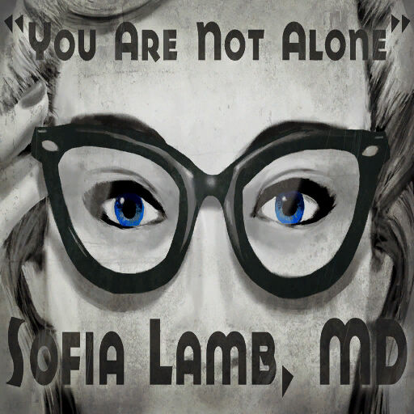
Cuando Andrew Ryan la invitó a su utopía para brindar asesoramiento a la población aislada, ella agradeció la oportunidad.
Una vez que la Dra. Lamb llegó a Rapture, comenzó a difundir sus ideales altruistas, con la esperanza de iluminar a los ciudadanos a través del "bien común" y crear una verdadera utopía. Sus técnicas poco convencionales incluían sesiones de terapia gratuitas para los ciudadanos pobres en Pauper's Drop, juegos de póquer en los que intencionalmente perdió para repartir riqueza entre quienes la necesitaban, y la creación de una comuna artística en su propiedad personal en Dionysus Park . Después del nacimiento de su hija, Eleanor Lamb, se aseguró de que Eleanor fuera el recipiente perfecto para seguir avanzando en sus objetivos. Trató de mantener a su hija aislada de otros niños y la instruyó en privado, con la esperanza de desarrollar un intelecto a nivel de genio.
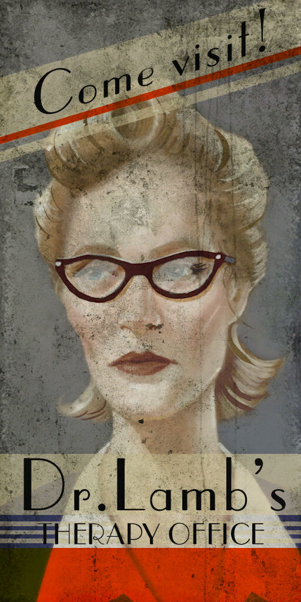
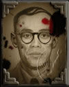
El Dr. Yi Suchong MD (易 蘇 崇) es un investigador médico líder en Rapture por sus investigaciones sobre el ADAM y su uso para crear plásmidos y alterar la función cerebral. Yi Suchong se refiere a sí mismo como un oportunista, aprovechando los trágicos acontecimientos como la Guerra Civil en su beneficio. Curiosamente, siempre habla de sí mismo en tercera persona. Se adaptó perfectamente a la sociedad de Rapture y trabaja simplemente para el mejor postor.
La vida del Dr. Yi Suchong comenzó como hijo de un humilde sirviente de una casa rural en Corea. Durante la Segunda Guerra Mundial, fue acusado de vender opio a los japoneses. Efectivamente, Suchong no fue asesinado como el resto de sus conciudadanos debido a sus negocios, con los cuales sufragaba los gastos de sus investigaciones médicas. En diciembre de 1946, Suchong desapareció para evitar ser perseguido por el gobierno chino por colaborar con el enemigo.
En Rapture, trabajó de modo independiente bajo el nombre Suchong Institute and Laboratories, con contratos con Industrias Ryan y Sinclair Solutions. Pero debido al poco interés monetario de ambos, también lo hizo secretamente para Fontaine Futuristics en su departamento de genética.
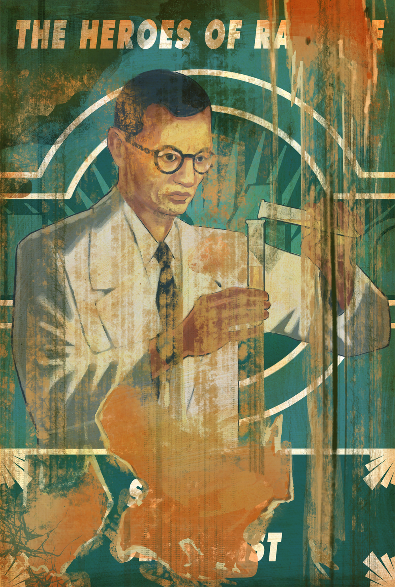